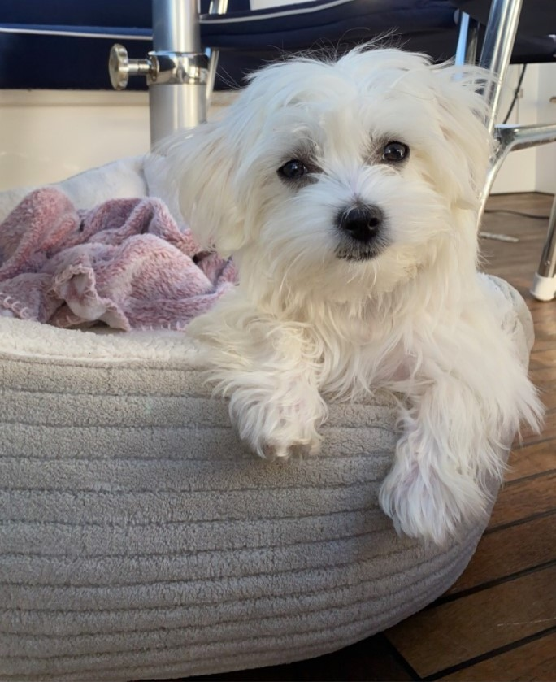

"woff.... hold musa på meg."

Dette er hunden min. Det er en jente og hun heter Cindy. Hun er ca. 10 månder gammel.
Hun spiser mest hundemat, og av og til for hun lov til å spise noe annet som
hun elsker som er brødskive med leverpostei.
Hun leker mest ute i gresset og av og til inne. Det hun liker mest er å leke med bamser
eller baller. Favoritt leken hennes er en sjiraff bamse.
Kontakt eieren på alekal07@tysverelev.no